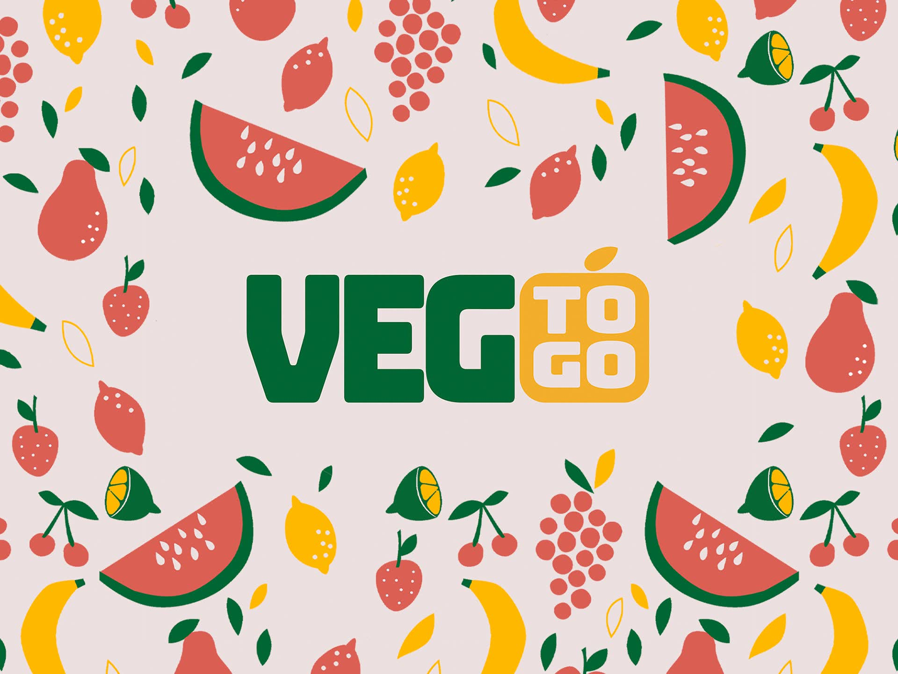
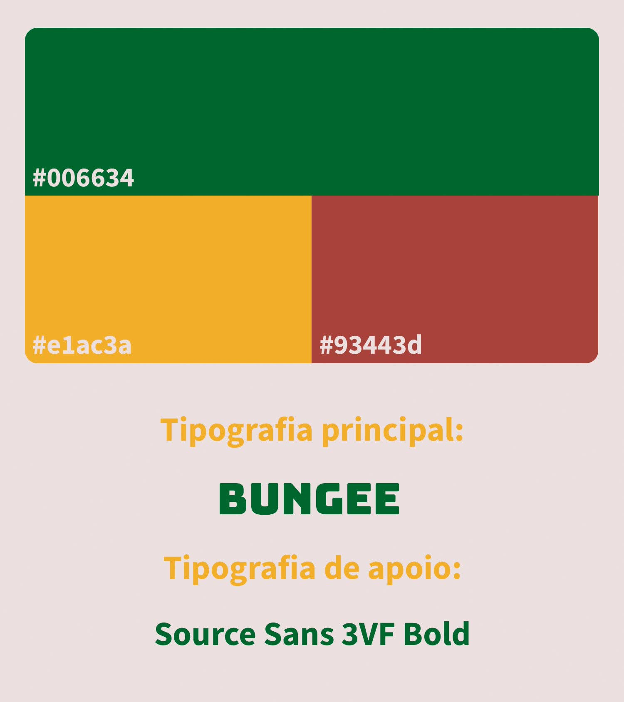
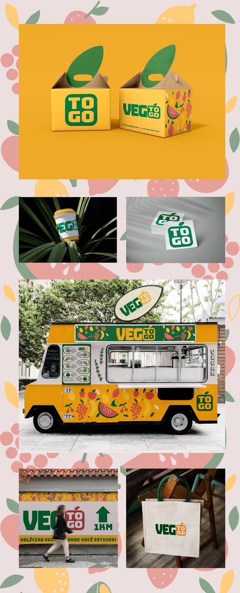
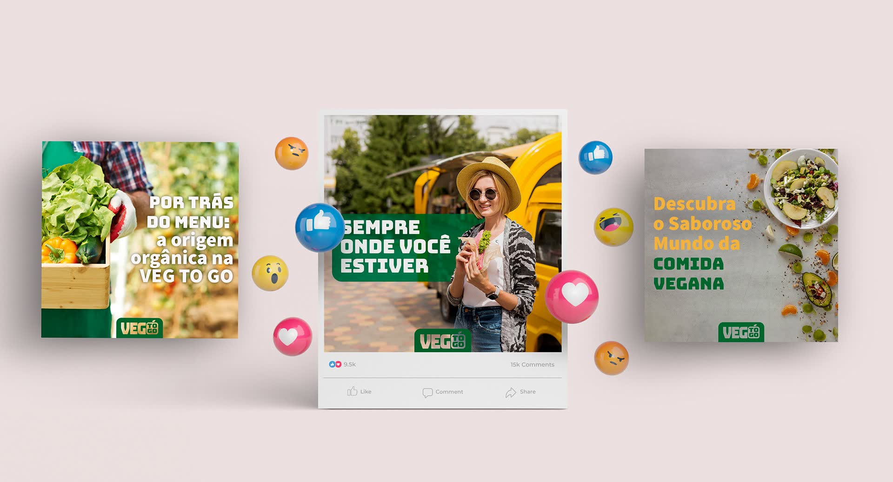

Veg To Go

Comida vegana sobre ruedas
Veg To Go es un food truck vegano imaginado como ejercicio de identidad: hamburguesas artesanales y opciones a base de plantas, con ingredientes orgánicos, que llevan la comida consciente a la calle. Es un proyecto conceptual, sin cliente real.
- Desafío
- Sacar la comida vegana del terreno de lo serio y lo restrictivo y darle el tono de la comida callejera: rápida, alegre y apetecible, reconocible desde lejos en un camión aparcado.
- Solución
- Un logotipo de bloque pesado en Bungee, con «To Go» apilado dentro de un cuadrado como una etiqueta de pedido y una hoja como remate. Paleta de verde profundo, amarillo mostaza y rojo tomate, un patrón de frutas ilustradas y aplicaciones que van del camión al packaging y las redes.
- Mi rol
- Dirección de arte y diseño de marca: concepto, logotipo, paleta y aplicaciones.
- Resultado
- Un ejercicio para poner a prueba un sistema completo, de la identidad a su uso en camión, packaging y redes sociales.



Créditos
Cliente
Proyecto conceptual · sin cliente
Año
2021
Servicios
Identidad visual · Dirección de arte · Packaging · Redes sociales
Mi rol
Dirección de arte · Diseño